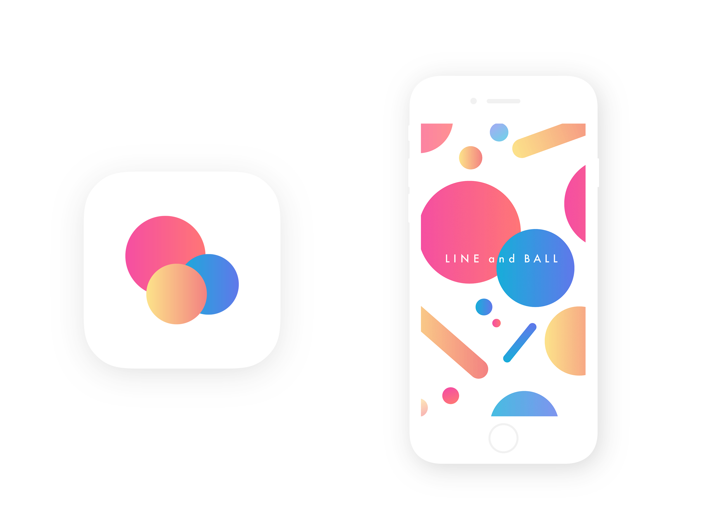
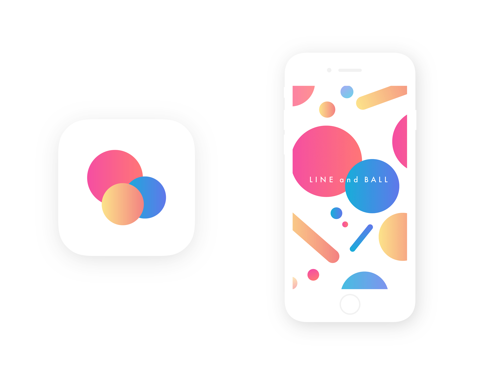

02-07
UI Design / Game Design / Planning
Overview
CyberAgent Internship 2017 UIDA にて開催された「新しいパズルゲームの企画とUIを考える」がテーマのインターンシップで UI発明賞 をいただいた作品です。点と点を結び、自由に線を描くことで、ボールをゴールへと転がします。色の組み合わせで、描かれる線の性質が変わり「壊れる」「跳ねる」などの様々な性質を作り出し、パズルを解き明かす多様なパターンを生み出します。
ProjectDetails
制作日 : 2017年8月
制作期間: 1week
Tool
Adobe Illustrator
Adobe Photoshop
Sketch
Prott
Personal Work
藤木 良祐
- Design
- Planning
 

Process
大人気ゲームアプリを代表する「パズドラ」や「ツムツム」といったパズルゲームの登場は、世の中のパズルゲームを席巻しながらも、パズルゲーム業界を「マス目」という制約に囚わせてしまいました。そこで、パズルゲームに必要不可欠なルール性という制約を残しつつも、答えを導く選択が無限に開かれた自由度の高いパズルゲームを提案しました。
Game Tutorial
画面上に存在する点と点を結ぶことで、「LINE」が引かれます。「LINE」の引き方や、どの点と結びつけるかで、無限の選択肢と答えが用意されています。「LINE」が引かれると、右上の数字が1つ減り、数が0になると、「BALL」が転がります。「BALL」がゴールにたどり着くことのできる「LINE」を探りあて描き明かすパズルゲームです。
 





Variety
様々な色の点を結ぶことで、多種多様な性質をもつ「LINE」を生み出すことができます。黄色の点同士を結ぶと「飛び跳ねる性質をもつLINE」を作り、青色の点同士を結ぶと「壊れ砕ける性質をもつLINE」を作り出します。さらに、赤色と黄色の点を結ぶと「摩擦抵抗の少ない性質をもつLINEを作り、青色と黄色の点を結ぶと「粘着性をもつLINE」を作り出します。
Game Design
画面上に広がる「LINE」の色や数を調整することによって、ゲームの難易度を操作することが可能です。点の種類や色を増やせば増やすほど、生み出すことのできる「LINE」の選択肢が増え、複雑性と難易度を上げることができます。